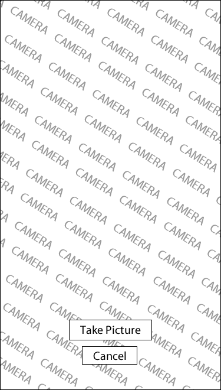
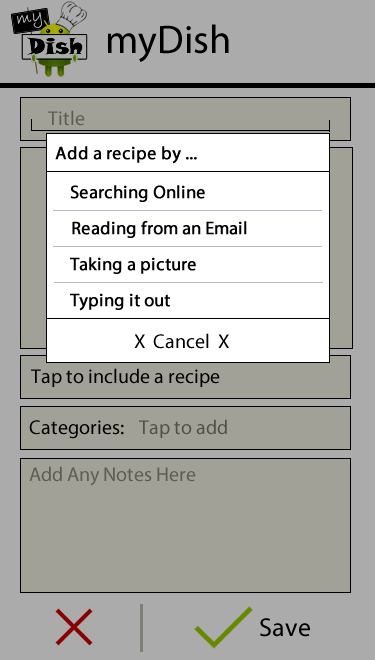
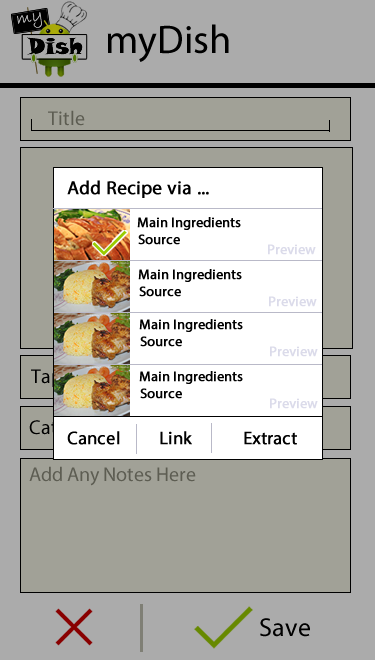
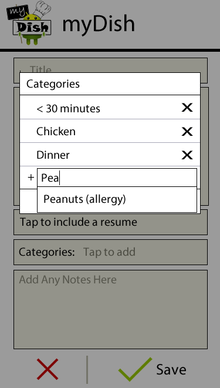
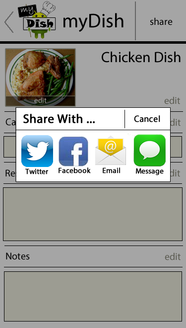

Design Ideas
After the creation of our personas, we determined a set of criteria that we wanted our design ideas to meet. We wanted our product to place a priority on our users’ most important values - namely efficiency, organization, and making the best use of their time. We also wanted to make sure we created a new tool for our users to help them complete tasks more easily, not an entire new system that they would need to learn. Generally, we wanted to make the process of cooking simpler and more enjoyable for our users. We had an ideation session where we sat down with sticky notes and came up with every idea we could related to the space in which we were designing, and sorted them spanning from “blue sky” to “mountains” to “ground,” where blue sky ideas correspond to creative, life-changing ideas and ground ideas correspond to easier to implement but less impactful ideas.
Having pushed the limits of our design space with various ideas such as a “grocery store social network” or a “coupon tracker,” we sat down to refine our ideas. Admittedly, not all of them were a good fit for all of the user needs that we wanted to meet, and not all of them were feasible, so we began to narrow down our ideas to fit the scope of this class. After comparing each of our more plausible ideas with the needs and values of each of our four personas, we selected four ideas to sketch out as an initial refinement of our multitude of ideas.
Cooking Assistant
Shared Grocery List
Food “Instagram”
Grocery Store Social Network
Our Current Design
Our current design includes a list view of all the recipes that the user has taken, a way of filtering the list via categories, adding new recipes, obtaining recipes, and editing recipes. The main screen, the screen the user visits on opening the app, contains the list of all recipes saved by the user. On this screen, there are three interface to function mappings: adding an entry, editing an entry, sharing entries, and searching (filtering) entries.
Adding an Entry
To add an entry, users tap on the camera button. One shortcoming of this in our paper prototypes was that our users thought that the camera button immediately takes the pictures, but that may have been simply due to a poor representation of the main screen (which was blank because there were no entries). Otherwise, users collectively agreed that cameras naturally mapped to taking a picture.
Tapping on the button takes the user to the camera screen, which has the entire background as the capture screen and a “take picture button” to take the picture. The built-in camera on a phone automatically incorporates an additional dialog to save or discard the image.

Upon choosing to save the capture image, the user is taken to the “add an entry” screen. On this screen, the user can specify any, if not all, of the details for the entry. Tapping the image again will allow the user to retake (back to the camera screen), but there will be an additional dialog that prompts the user to make sure the user wants to edit the picture. This additional feature was added to prevent the user from waiting for the camera to load up again if the user did not mean to edit the picture - tapping the image maps differently on the main screen.
To include a recipe,the user is offered a number of methods because typing in a recipe word by word via an on-screen keyboard was less than optimal. Tapping the “include a recipe” button brings up a dialog asking the user to choose the method of inputting a recipe. We include options that have been suggested by users thus far and will conduct further tests to refine that list. Getting the recipe from an email simply involves getting the user to specify the email from the email client on the phone. Searching for a recipe online, however, brings up a larger dialog.

The larger dialog shows the recipes found online by searching the title of the recipe by default or another user specified query. The results of the searched are shown as small snippets of the recipe name, source, and thumbnail. Tapping the item will bring up the site link where the app found the recipe but is not necessary to add the recipe.. Tapping on the icon toggles a checkmark on the image, indicating that the item has been selected. The user can then specify whether to grab the url or the recipe itself from the site. We decided to include searching online for recipes because most of our users have indicated that they regularly look for recipes online when trying to decide what to make. In addition, there are extremely large databases of recipes from vast collections of cookbooks online, which makes searching for a recipe online easier than through various physical cookbooks.

To add categories to the entry, users can tap the categories button. Our users have suggested a couple of different categories that are useful. We have decided that we can include some common general categories that can be removed by the user. Users can also add categories that are more specifically tailored to their needs. The category dialog allows the user to type in a category and have an autocomplete list show what categories exist or add the input to the list.

Editing an Entry
Going back to the main screen, users can tap on the image to edit an entry. During our prototype testing, we found that users instinctively tap on the image whenever they want to do something with the image regardless of what they were asked to do. Their expectations of what tapping the image did differed accordingly to the tasks they were asked to perform on the app. As a result, we decided to make all the features users would want to do, accessible by tapping the image. We are considering allowing the user to tap anywhere to achieve the same, in case some users prefer tapping on the text or the title. Because the title and text are currently not mapped to anything, there will be little loss in functionality for our users by mapping it to the entire item as opposed to only the image. The following screen is shown when users tap the image.
On this screen, the user can see all the information that the user saved for that entry. “Edit”s are placed for the user to edit specific details in the entry; they are intuitively placed for the user to know which edit matches with which detail. We have considered having a single edit button or a save button at the bottom of the screen to edit/save the entire screen at once, but our users either did not wish to edit every detail but felt compelled to by the opportunity or thought they had to hit save after editing each detail. As mentioned before we also put the share functionality on this screen by having a share button at the top of the screen next to the icon. We chose not to place the share button at the bottom of the screen to allow the user to quickly share without scrolling through potentially long notes or recipes.
Sharing an Entry
To share an entry, the user can tap the share button on the top-right hand corner of the screen. A dialog containing the different sharing methods come up. The design of this bar was inspired by the iOS share dialog. We are considering limiting the options of sharing to email and perhaps facebook because our user group are most familiar and comfortable with using email, but having labels under the icons can both clearly define what each icon is and allow the users options of other methods without deterring them from email. Each sharing method will then take the user to the usual api associated with those applications, containing the recipe and entry details.

Searching (Filtering) for Entries
To filter for entries by categories, there is a clearly located search button on the main page that expands to a search bar. We originally had the standard magnifying glass icon for searching, but our users thought it mapped to zooming in on a particular image. Having an entire search bar at the top was a little too distracting and cluttered, so we decided to have an expandable search bar that would show its entire functionality when the user requests it.